vignettes/simmr.Rmd
simmr.Rmdtl;dr see the Quick Start vignette
simmr is a package designed to solve mixing equations for stable isotopic data within a Bayesian framework. This guide is designed to get researchers up and running with the package and giving them a full list of all the available features. No expertise is required in the use of R.
simmr is designed as an upgrade to the SIAR package and contains many of the same features. This new version contains a slightly more sophisticated mixing model, a simpler user interface, and more advanced plotting features. The key differences between SIAR and simmr are:
simmr has a slightly richer mixing model based on code from the Parnell et al 2013 Environmetrics papersimmr does not have a menu system; all commands must be run through the console or script windowssimmr uses ggplot2 to create graphs and JAGS to run the mixing modelWe assume that you have a sound working knowledge of stable isotopic mixing models, and the assumptions and potential pitfalls associated with these models. A list of required reading is presented in Appendix A of this guide. We strongly recommend reading Philips et al 2015, Canadian Journal of Zoology for the basic assumptions and dos and don’ts of running mixing models.
We assume that if you have got this far you have installed R. We also recommend installing Rstudio as this provides a very neat interface to use R and simmr. The instructions below all assume you are using Rstudio.
If you find bugs in the software, or wish to suggest new features, please add your input to the simmr GitHub page.
simmr packageThe simmr package uses the JAGS (Just Another Gibbs Sampler) programmer to run the stable isotope mixing model. Before you install simmr, visit the JAGS website and download and install JAGS for your operating system.
Next, start Rstudio and find the window with the command prompt (the symbol >). Type
install.packages('simmr')It may ask you to pick your nearest CRAN mirror (the nearest site which hosts R packages). You will then see some activity on the screen as the simmr package and the other packages it uses are downloaded. The final line should then read:
package 'simmr' successfully unpacked and MD5 sums checked
You then need to load the package. Type
This will load the simmr package and all the associated packages. You’ll need to type the library(simmr) command every time you start R. If you haven’t installed JAGS properly you will be informed at this point.
Before getting started there are a couple of points to consider.
The best way to use the simmr package is by creating scripts. A script can be created in Rstudio by clicking File > New File > Rscript. This opens a text window which allows commands to be typed in order and saved. The command can be sent to the command prompt (which Rstudio calls the Console) by highlighting the command and clicking Run (or going to Code > Run Lines). There are also keyboard shortcuts to speed up the process. We strongly recommend you learn to run R via scripts.
simmr can handle three different types of data structure:
Unless you specify a grouping variable simmr assumes that all the observations are from the same group. If you have extra variables (e.g. explanatory variables) that you think may influence the dietary proportions, you should consider using (MixSIAR)[https://github.com/brianstock/MixSIAR] instead.
The general structure for running simmr is as follows:
simmr_load on the data to get it into the right formatplot
simmr_mcmc
plot and summary
For the next part of this document, we concentrate on simple examples without grouping structure.
simmr requires at minimum 3 input objects; the consumers or mixtures, the source means, and the source standard deviations. Optionally, you can also add correction data (also called trophic enrichment factors, TEFs) represented again as means and standard deviations, and concentration dependence values. The easiest way to get data into simmr is to create an Excel file, as shown in the included vignette('quick_start) guide. Alternatively you can copy and past your data, comma separated, as below:
mix = matrix(c(-10.13, -10.72, -11.39, -11.18, -10.81, -10.7, -10.54,
-10.48, -9.93, -9.37, 11.59, 11.01, 10.59, 10.97, 11.52, 11.89,
11.73, 10.89, 11.05, 12.3), ncol = 2, nrow = 10)
colnames(mix) = c('d13C','d15N')
s_names = c("Zostera", "Grass", "U.lactuca", "Enteromorpha")
s_means = matrix(c(-14, -15.1, -11.03, -14.44, 3.06, 7.05, 13.72, 5.96), ncol = 2, nrow = 4)
s_sds = matrix(c(0.48, 0.38, 0.48, 0.43, 0.46, 0.39, 0.42, 0.48), ncol = 2, nrow = 4)
c_means = matrix(c(2.63, 1.59, 3.41, 3.04, 3.28, 2.34, 2.14, 2.36), ncol = 2, nrow = 4)
c_sds = matrix(c(0.41, 0.44, 0.34, 0.46, 0.46, 0.48, 0.46, 0.66), ncol = 2, nrow = 4)
conc = matrix(c(0.02, 0.1, 0.12, 0.04, 0.02, 0.1, 0.09, 0.05), ncol = 2, nrow = 4)The mix object above contains the stable isotopic data for the consumers. The data should be listed as the consumer values for the first isotope, followed by the consumer values for the second isotope and so on. The matrix function turns this into a matrix (a rectangle of numbers) with 2 columns. The first column contains the data for isotope 1, and the second the data for isotope 2. Any number of isotopes and observations can be used. It is recommended but not necessary to give the mixtures column names representing the isotopes to which each column corresponds.
The source names are provided in the s_names object, and the source means and standard deviations in s_means and s_sds. These latter objects must also be matrices, where the number of rows is the number of sources, and the number of columns the number of isotopes. In each case, the data are included by listing the values for the first isotope, then the second isotope, and so on.
The correction data is stored in c_means and c_sds. Again this should be a matrix of the same dimension as s_means and s_sds. Finally the concentration dependencies (i.e. the elemental concentration values) are included as conc.
Some data sets are also included in simmr for quick access to examples. See data(package = "simmr") for the list. They can all be accessed via, e.g. data("geese_data").
To load the data into simmr, use:
simmr_in = simmr_load(mixtures = mix,
source_names = s_names,
source_means = s_means,
source_sds = s_sds,
correction_means = c_means,
correction_sds = c_sds,
concentration_means = conc)Remember that the correction_means, correction_sds, and concentration_means are optional.
We can now plot the raw isotopic data with:
plot(simmr_in)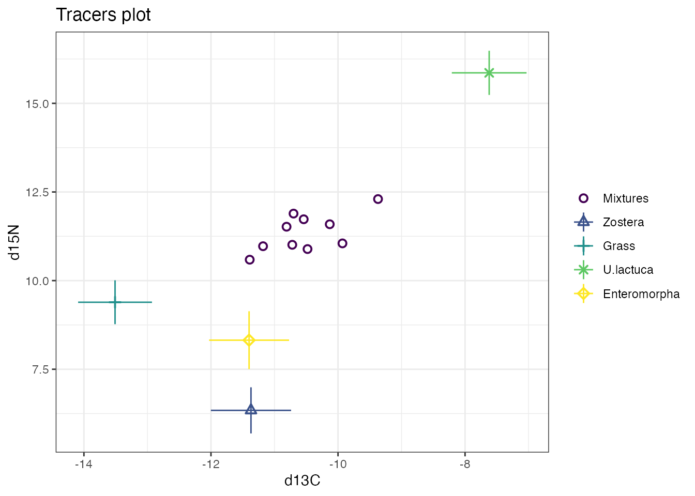
This will produce a biplot with the isotope that is in the first column on the x-axis, and the isotope in the second column on the y-axis. You can make the plot slightly nicer with some extra arguments:
plot(simmr_in,
xlab = expression(paste(delta^13, "C (\u2030)",
sep = "")),
ylab = expression(paste(delta^15, "N (\u2030)",
sep = "")),
title = 'Isospace plot of example data')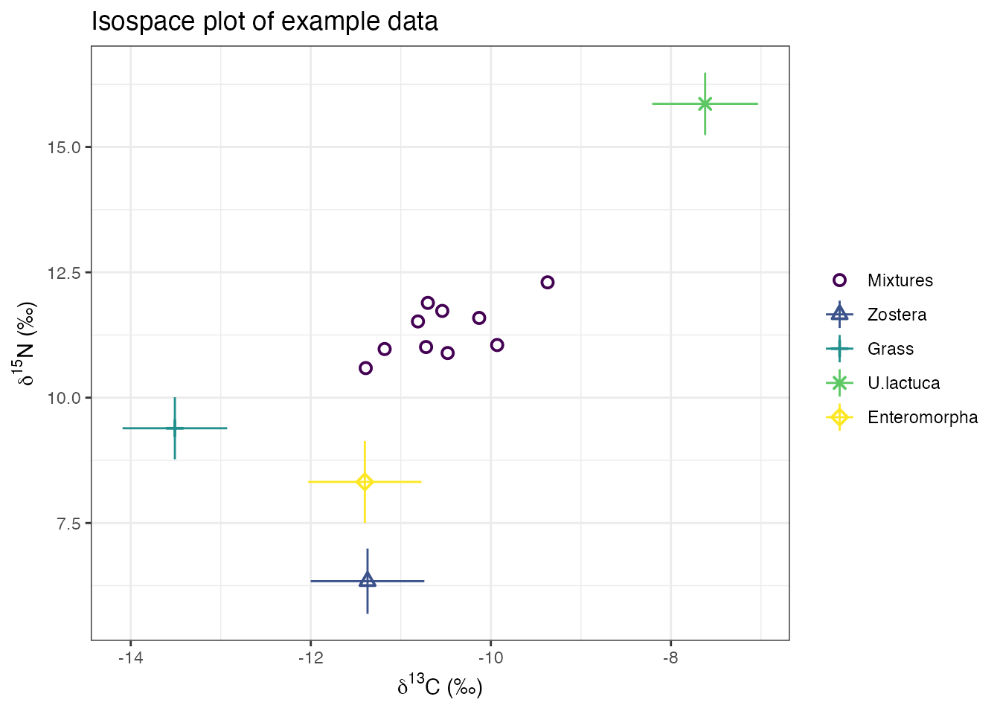
See the help file help(plot.simmr_input) for more options on the plotting commands, including the ability to plot different tracers/isotopes when there are more than 2 isotopes.
If all the mixtures lie inside the mixing polygon defined by the sources, then the data are acceptable for running simmr. See Philips et al 2015, Canadian Journal of Zoology for more details on when data are suitable for running through a mixing model.
The next step is to actually run the model. This is achieved with the command:
simmr_out = simmr_mcmc(simmr_in)## module glm loadedThis command takes the object simmr_in we created earlier and uses it as input for the model. It tells simmr to store the output from the model run in an object called simmr_out.
The model should take less than a minute to run, though this will depend on the speed of the computer you are using. Other data sets might take slightly longer or shorter depending on the number of sources, isotopes, and observations. The progress of the model is displayed on the command line window, which shows the percentage complete.
Markov chain Monte Carlo (MCMC) works by repeatedly guessing the values of the dietary proportions and find those values which fit the data best. The initial guesses are usually poor and are discarded as part of an initial phase known as the burn-in. Subsequent iterations are then stored and used for the posterior distribution; the best estimates of the dietary proportions given the data and the model. Because it can take many thousands of iterations to move away from the initial guesses, convergence diagnostics can be created to check the model has run properly. In simmr this is done with:
summary(simmr_out, type = 'diagnostics')##
## Summary for 1
## Gelman diagnostics - these values should all be close to 1.
## If not, try a longer run of simmr_mcmc.
## deviance Zostera Grass U.lactuca Enteromorpha sd[d13C]
## 1.00 1.00 1.00 1.00 1.00 1.01
## sd[d15N]
## 1.00If the model run has converged properly the values should be close to 1. If they are above 1.1, we recommend a longer run. See help(simmr_mcmc) for how to do this.
You can check the fit of the model with a posterior predictive check. This is similar to a fitted values plot in a linear regression. If the data points (denoted by the plot as \(y\)) broadly lie in the fitted value intervals (denoted \(y_rep\); the default is a 50% interval) then the model is fitting well:
post_pred = posterior_predictive(simmr_out)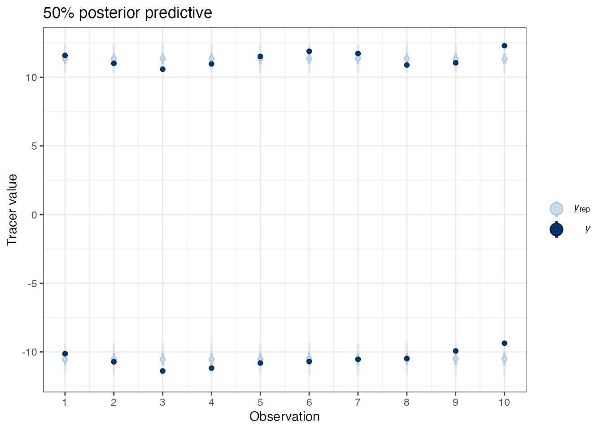
print(post_pred)The output includes a table showing which observations lie outside the posterior predictive and the proportion doing so, which should approximately match the proportion specified in the posterior_predictive function (default 50%).
All SIMMs use informative (usually generalist) prior distributions as a default. You can plot the priors and the posteriors with:
prior_viz(simmr_out)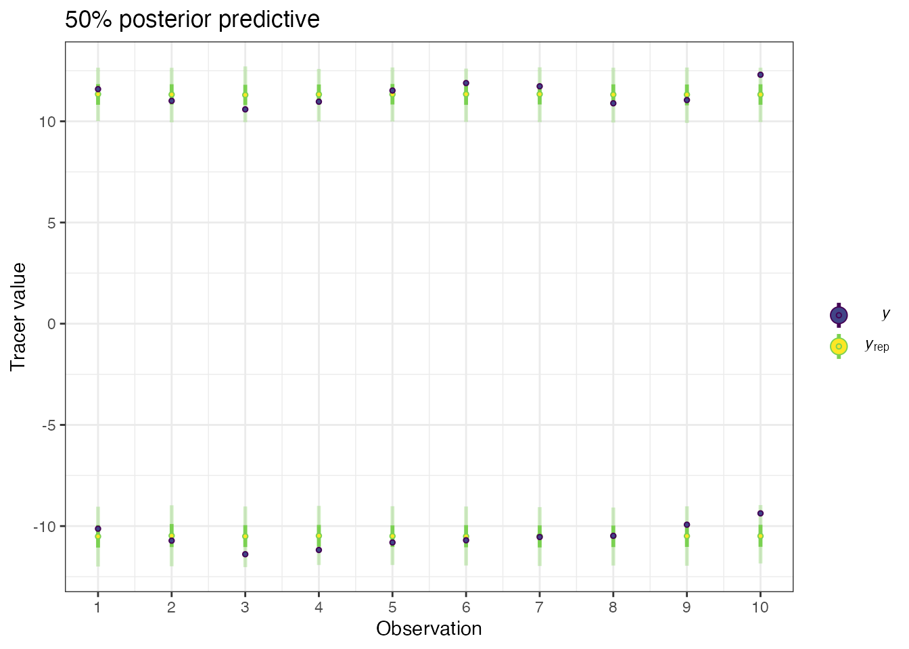
simmr produces both textual and graphical summaries of the model run. Starting with the textual summaries, we can get tables of the means, standard deviations and credible intervals (the Bayesian equivalent of a confidence interval) with:
summary(simmr_out, type = 'statistics')##
## Summary for 1
## mean sd
## deviance 36.294 3.134
## Zostera 0.223 0.132
## Grass 0.287 0.080
## U.lactuca 0.276 0.032
## Enteromorpha 0.214 0.119
## sd[d13C] 0.556 0.229
## sd[d15N] 0.429 0.228
summary(simmr_out, type = 'quantiles')##
## Summary for 1
## 2.5% 25% 50% 75% 97.5%
## deviance 32.226 33.940 35.688 37.786 44.199
## Zostera 0.028 0.113 0.205 0.319 0.493
## Grass 0.147 0.231 0.281 0.336 0.465
## U.lactuca 0.215 0.254 0.274 0.296 0.344
## Enteromorpha 0.035 0.119 0.201 0.296 0.469
## sd[d13C] 0.183 0.406 0.524 0.677 1.077
## sd[d15N] 0.043 0.275 0.410 0.551 0.952These suggest that the dietary proportions for this model are quite uncertain. However we can see that the credible interval for U.lactuca is the narrowest, running from approximately 20% to 35% of the diet. The reason this one is the narrowest can be seen from the isospace plot - this source is the most clearly separated from the others.
simmr can also produce histograms, boxplots, density plots, and matrix plots of the output. Starting with the density plot:
plot(simmr_out, type = 'density')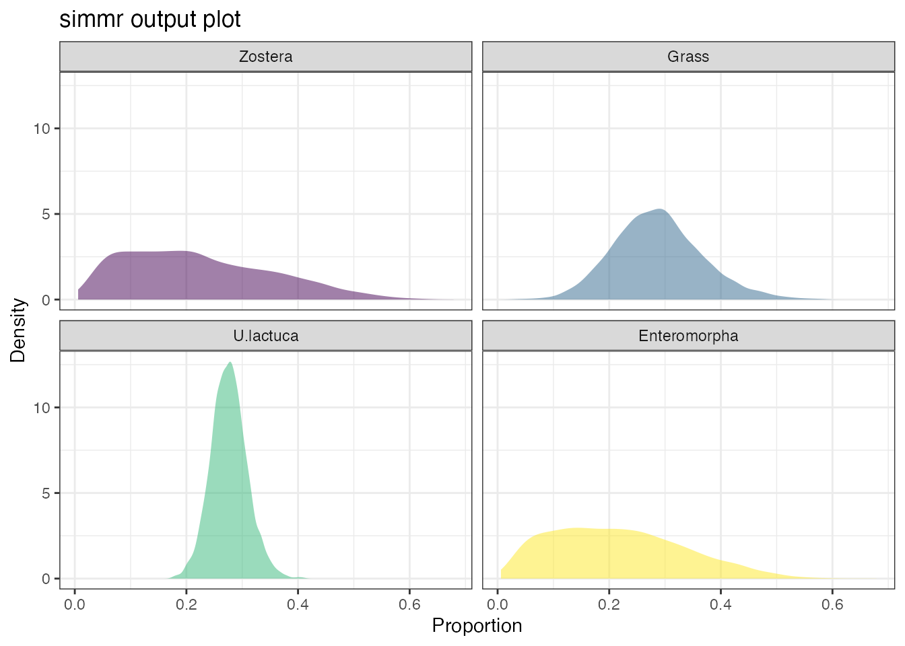
We can see that Zostera and Enteromorpha are poorly constrained in comparison to Grass and especially U.lactuca. Again this is unsurprising since the isospace plot indicated that these were the two most clearly separated sources.
The most useful output plot is the matrix plot:
plot(simmr_out, type = 'matrix')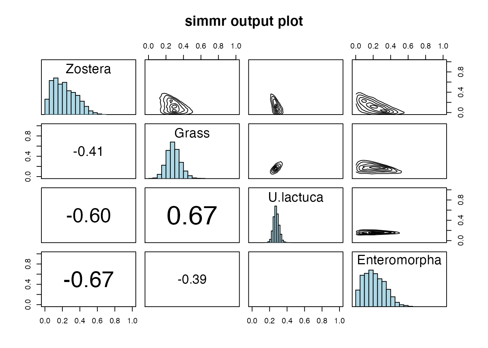
This shows the source histograms on the diagonal, contour plots of the relationship between the sources on the upper diagonal, and the correlation between the sources on the lower diagonal. Large negative correlations indicate that the model cannot discern between the two sources; they may lie close together in iso-space. Large positive correlations are also possible when mixture data lie in a polygon consisting of multiple competing sources. Here the largest negative correlation is between Zostera and Enteromorpha. This is because they lie closest together in isospace. In general, high correlations (negative or positive) are indicative of the model being unable to determine which food sources are being consumed, and are an unavoidable part of stable isotope mixing models.
If you want to compare the dietary proportions between two different sources, you can use the compare_sources function. This takes two or more sources and compares the dietary proportions with an optional plot. For example:
compare_sources(simmr_out,
source_names = c('Zostera','U.lactuca'))## Prob ( proportion of Zostera > proportion of U.lactuca ) = 0.351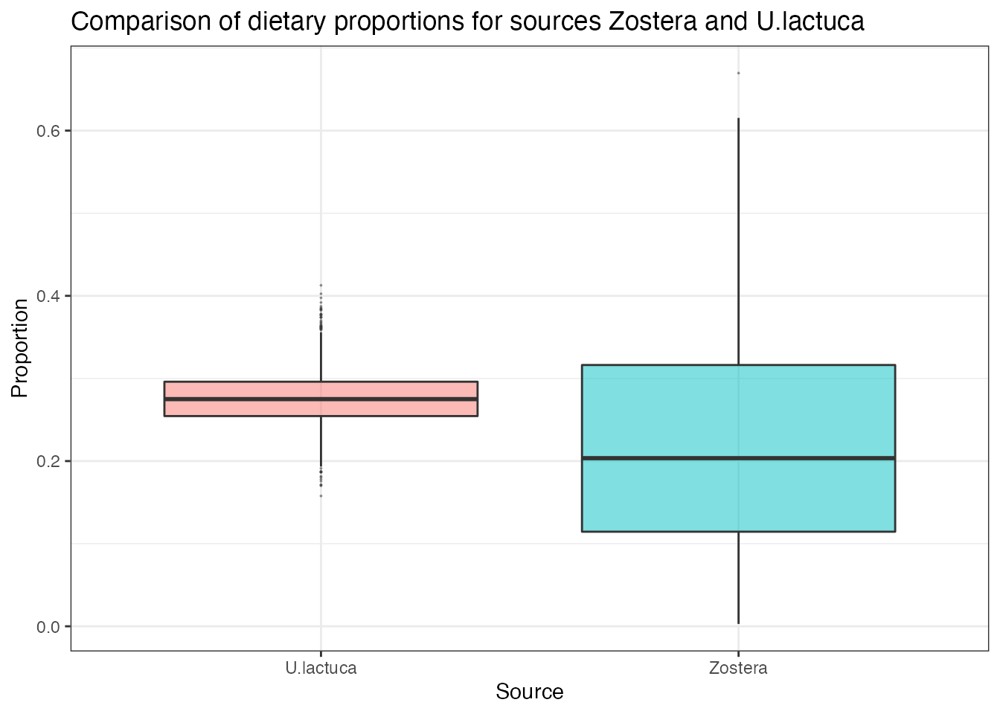
This produces a direct probability that the dietary proportion for the first source is bigger than that of the second. If you want to compare more than two sources, specify them with:
compare_sources(simmr_out,
source_names = c('Zostera',
'U.lactuca',
'Enteromorpha'))## Most popular orderings are as follows:
## Probability
## Zostera > U.lactuca > Enteromorpha 0.3214
## Enteromorpha > U.lactuca > Zostera 0.2583
## U.lactuca > Enteromorpha > Zostera 0.2272
## U.lactuca > Zostera > Enteromorpha 0.1636
## Zostera > Enteromorpha > U.lactuca 0.0150
## Enteromorpha > Zostera > U.lactuca 0.0144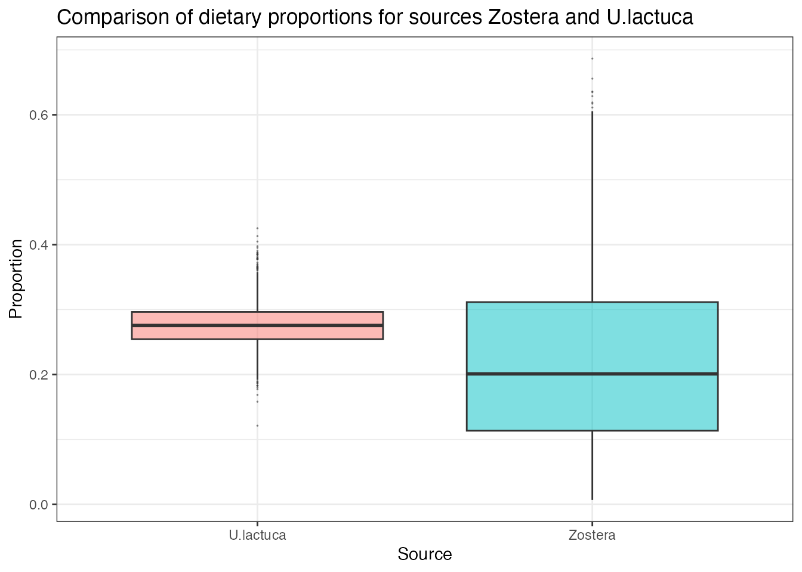
For further information and options on comparing sources, see help(compare_sources).
simmr on multiple groupsIn many cases we have data from different sampling locations, or different types of individuals (e.g. male/female) and we to compare between these groups. simmr can handle these data sets provided they all share the same sources, corrections and concentration dependence values.
A useful data set is given by Inger et al 2006 and provided as part of the original SIAR package. These data concern Brent Geese observed on 8 separate sampling periods.
These data are included in the package, and we can load these data into R with:
data(geese_data)…and into simmr with:
simmr_groups = with(geese_data,
simmr_load(mixtures = mixtures,
source_names = source_names,
source_means = source_means,
source_sds = source_sds,
correction_means = correction_means,
correction_sds = correction_sds,
concentration_means = concentration_means,
group = groups))Note that the group object above is specified to be a factor but can also be an integer, the levels of which will appear in plots. However, when specifying groups in later commands you should use the integer values to reference which groups to plot
Next it is a matter of following the simmr commands as before to load in, with an extra argument specifying the groups:
When we create the isospace plot we can specify which groups we wish to plot:
plot(simmr_groups,
group = 1:8,
xlab = expression(paste(delta^13, "C (\u2030)",
sep = "")),
ylab = expression(paste(delta^15, "N (\u2030)",
sep = "")),
title = 'Isospace plot of Inger et al Geese data',
mix_name = 'Geese')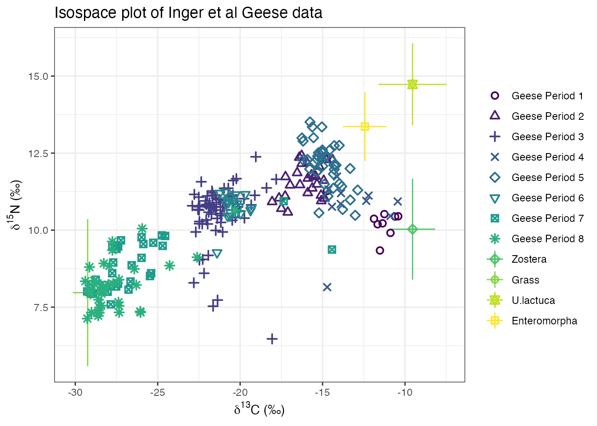
In the above code group = 1:8 can be changed specify any of the available groups. For example group = 2 would plot just sampling period 2, or group = c(1,3:7) would plot just sampling period 1 and 3 to 7.
The command for running the simmr model is identical to before:
simmr_groups_out = simmr_mcmc(simmr_groups)simmr will automatically run the model for each group in turn. This may take slightly longer than a standard single group run.
The summary command works the same as before. By default they will produce output for all groups, or you can specify the groups individually, e.g.:
summary(simmr_groups_out,
type = 'quantiles',
group = 1)##
## Summary for Period 1
## 2.5% 25% 50% 75% 97.5%
## deviance 51.066 52.533 53.951 56.049 62.445
## Zostera 0.384 0.518 0.593 0.676 0.805
## Grass 0.031 0.058 0.072 0.086 0.119
## U.lactuca 0.021 0.075 0.128 0.191 0.321
## Enteromorpha 0.023 0.092 0.166 0.272 0.489
## sd[d13C_Pl] 0.048 0.511 0.873 1.271 2.349
## sd[d15N_Pl] 0.016 0.165 0.347 0.614 1.371##
## Summary for Period 1
## 2.5% 25% 50% 75% 97.5%
## deviance 51.066 52.533 53.951 56.049 62.445
## Zostera 0.384 0.518 0.593 0.676 0.805
## Grass 0.031 0.058 0.072 0.086 0.119
## U.lactuca 0.021 0.075 0.128 0.191 0.321
## Enteromorpha 0.023 0.092 0.166 0.272 0.489
## sd[d13C_Pl] 0.048 0.511 0.873 1.271 2.349
## sd[d15N_Pl] 0.016 0.165 0.347 0.614 1.371
##
## Summary for Period 3
## 2.5% 25% 50% 75% 97.5%
## deviance 454.560 456.269 457.856 460.102 466.384
## Zostera 0.009 0.024 0.036 0.051 0.087
## Grass 0.393 0.418 0.428 0.437 0.453
## U.lactuca 0.297 0.399 0.443 0.478 0.524
## Enteromorpha 0.015 0.047 0.084 0.138 0.270
## sd[d13C_Pl] 0.401 0.654 0.759 0.865 1.068
## sd[d15N_Pl] 0.007 0.074 0.155 0.263 0.526##
## Summary for Period 1
## 2.5% 25% 50% 75% 97.5%
## deviance 51.066 52.533 53.951 56.049 62.445
## Zostera 0.384 0.518 0.593 0.676 0.805
## Grass 0.031 0.058 0.072 0.086 0.119
## U.lactuca 0.021 0.075 0.128 0.191 0.321
## Enteromorpha 0.023 0.092 0.166 0.272 0.489
## sd[d13C_Pl] 0.048 0.511 0.873 1.271 2.349
## sd[d15N_Pl] 0.016 0.165 0.347 0.614 1.371
## mean sd
## deviance 54.676 2.976
## Zostera 0.596 0.110
## Grass 0.073 0.022
## U.lactuca 0.139 0.082
## Enteromorpha 0.192 0.127
## sd[d13C_Pl] 0.945 0.601
## sd[d15N_Pl] 0.438 0.363
##
## Summary for Period 3
## 2.5% 25% 50% 75% 97.5%
## deviance 454.560 456.269 457.856 460.102 466.384
## Zostera 0.009 0.024 0.036 0.051 0.087
## Grass 0.393 0.418 0.428 0.437 0.453
## U.lactuca 0.297 0.399 0.443 0.478 0.524
## Enteromorpha 0.015 0.047 0.084 0.138 0.270
## sd[d13C_Pl] 0.401 0.654 0.759 0.865 1.068
## sd[d15N_Pl] 0.007 0.074 0.155 0.263 0.526
## mean sd
## deviance 458.520 3.047
## Zostera 0.039 0.020
## Grass 0.427 0.015
## U.lactuca 0.434 0.060
## Enteromorpha 0.100 0.070
## sd[d13C_Pl] 0.755 0.168
## sd[d15N_Pl] 0.184 0.141For plotting output with multiple groups you can only specify a single group to plot. This is so that you are not overwhelmed with plots:
plot(simmr_groups_out,
type = 'boxplot',
group = 2,
title = 'simmr output group 2')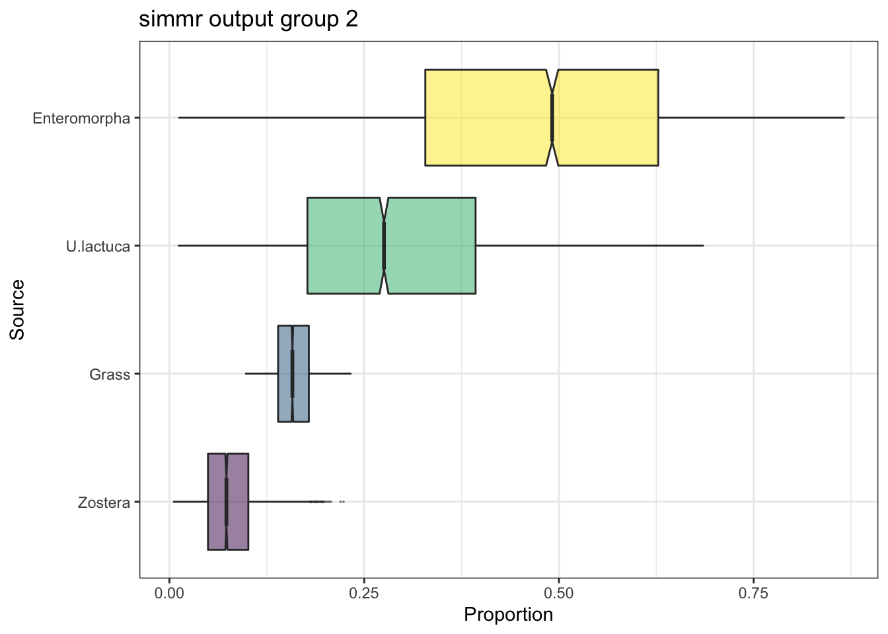
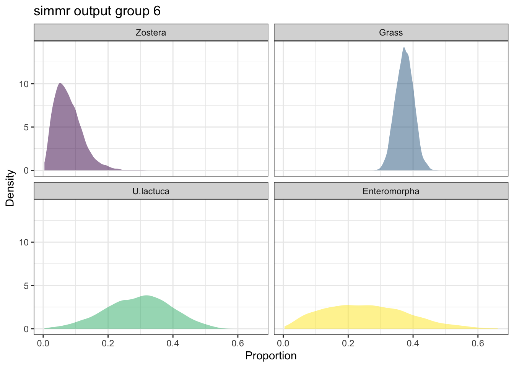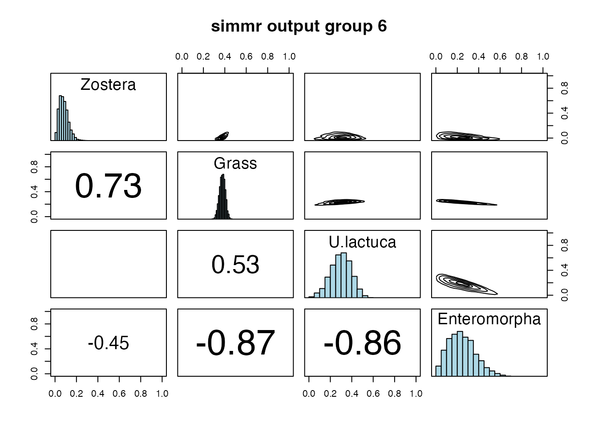
Whilst you can use the compare_sources function for multi-group data, there is also an extra function for comparing a single source between groups via the compare_groups function. This allows for probabilistic output and plots comparing a single source across different groups. The simplest use is where you want to compare just two groups:
compare_groups(simmr_groups_out,
source = 'Zostera',
groups = 1:2)## Prob ( proportion of Zostera in group Period 1 > proportion of Zostera in group Period 2 ) = 1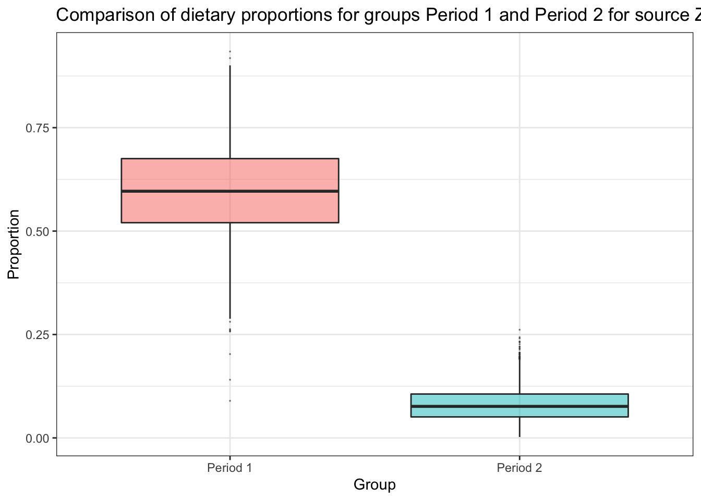
This produces the probability of the group 1 dietary proportion of Zostera being greater than that of group 2. It also produces a boxplot of the difference between the dietary proportions and will save this into a new object if specified. You can turn the plot off by adding the argument plot = FALSE.
If you specify more than two groups simmr will produce the most likely probabilistic orderings of the groups as well as the boxplot as before:
compare_groups(simmr_groups_out,
source = 'Zostera',
groups = 1:3)## Most popular orderings are as follows:
## Probability
## Period 1 > Period 2 > Period 3 0.8161
## Period 1 > Period 3 > Period 2 0.1839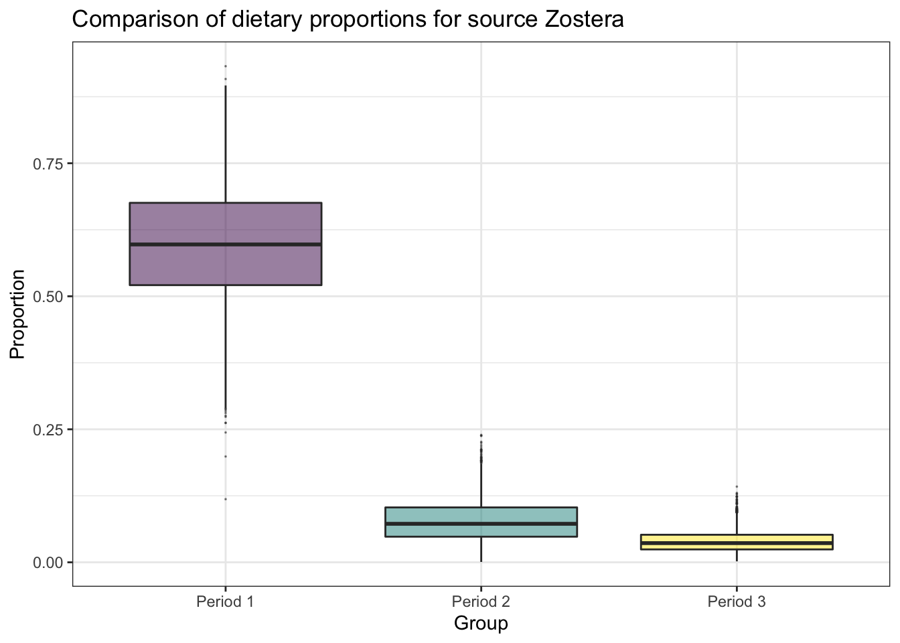
A common request is that of combining sources. We would recommend always doing this after running simmr, known as a-posteriori combining. Suppose for example, you wish to combine the U.lactuca and Enteromorpha sources which lie in a similar region in the isospace plot of the Geese data. To proceed, we can create a new simmr object using the combine_sources function:
simmr_out_combine = combine_sources(simmr_out,
to_combine = c('U.lactuca',
'Enteromorpha'),
new_source_name = 'U.lac+Ent')
plot(simmr_out_combine$input)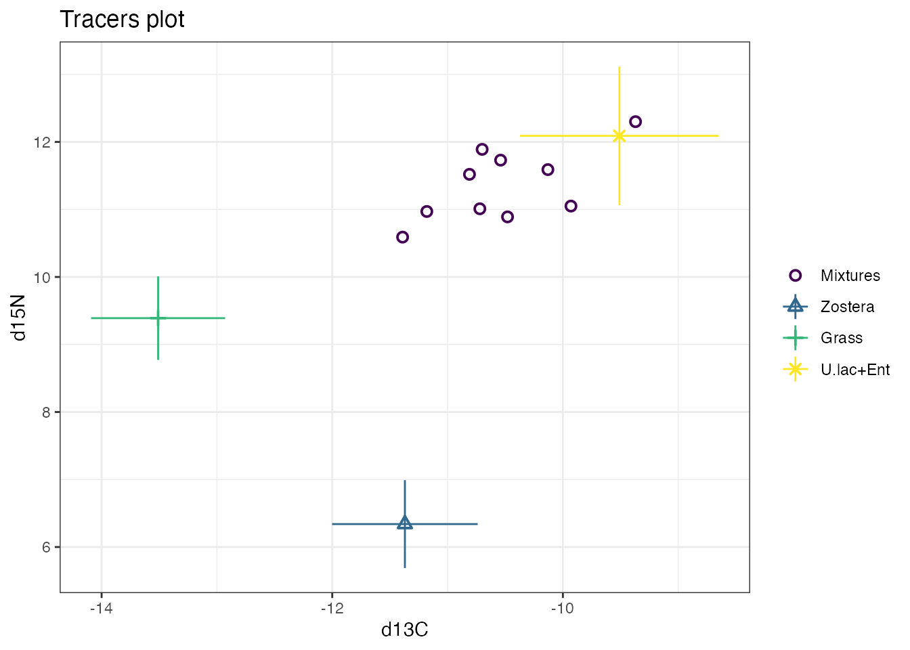
plot(simmr_out_combine,
type = 'boxplot',
title = 'simmr output: combined sources')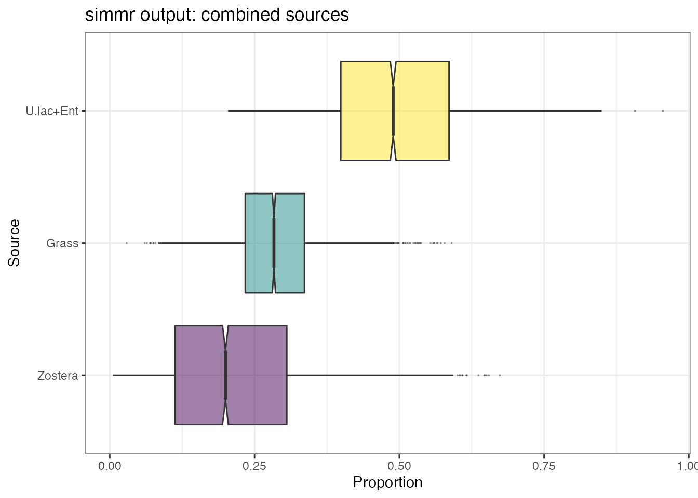
This will also work with multiple groups:
simmr_groups_out_combine = combine_sources(simmr_groups_out,
to_combine = c('U.lactuca',
'Enteromorpha'),
new_source_name = 'U.Lac+Ent')
plot(simmr_groups_out_combine$input,
group = 1:8)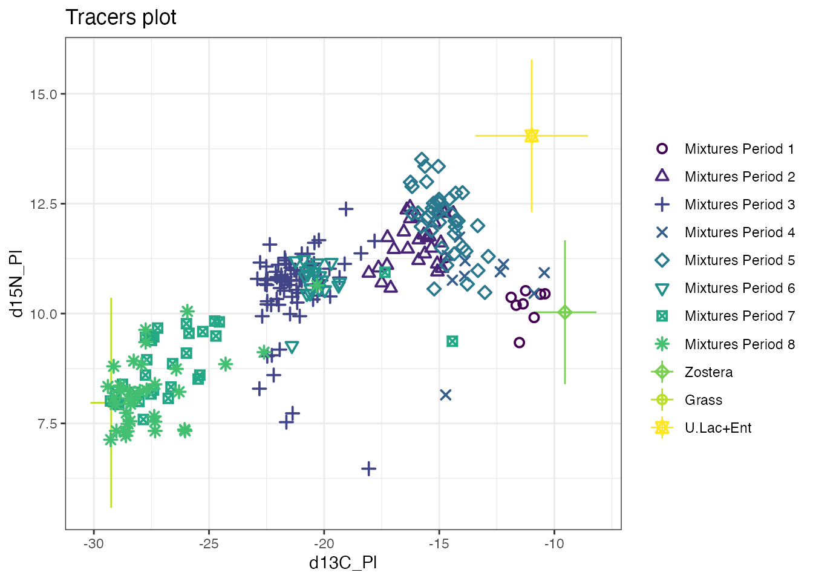
plot(simmr_groups_out_combine,
type = 'boxplot',
title = 'simmr output: combined sources',
group = 8)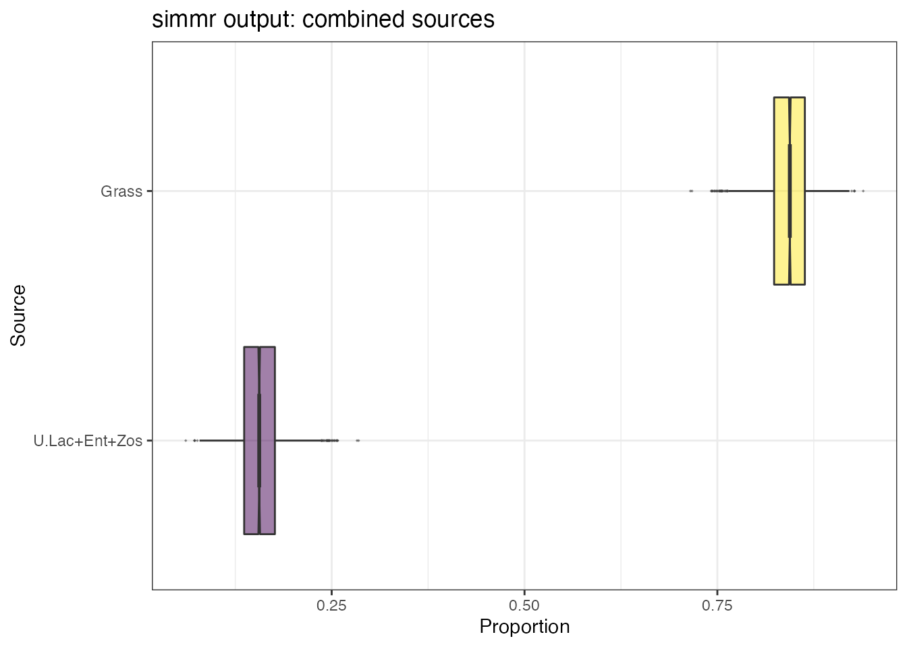
plot(simmr_groups_out_combine,
type = 'matrix',
title = 'simmr output: combined sources',
group = 8)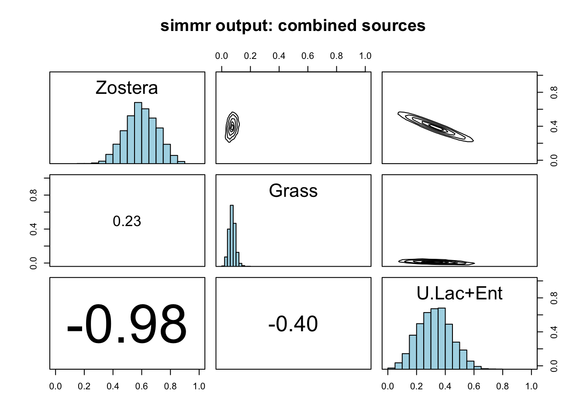
# And we can now compare sources across groups on this new data set
compare_groups(simmr_groups_out_combine,
source = 'U.Lac+Ent',
group = 1:3)## Most popular orderings are as follows:
## Probability
## Period 2 > Period 3 > Period 1 0.9486
## Period 2 > Period 1 > Period 3 0.0503
## Period 3 > Period 2 > Period 1 0.0008
## Period 1 > Period 2 > Period 3 0.0003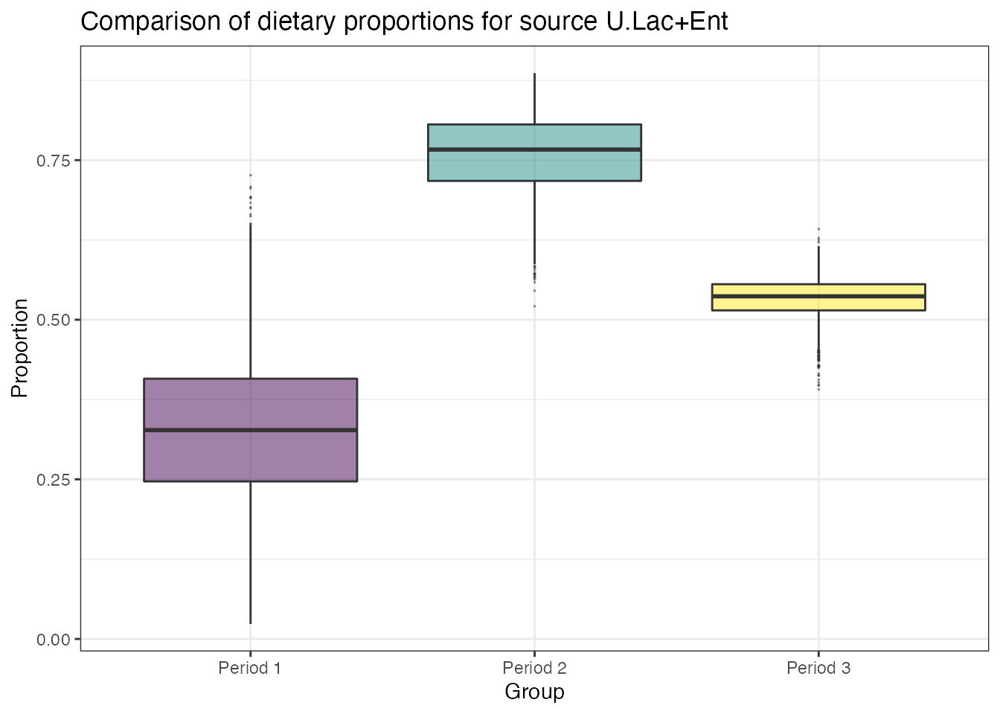
simmr will run fine with only one tracer, and no changes should be required to any of the functions. Here is an example with only one isotope:
mix = matrix(c(-10.13, -10.72, -11.39, -11.18, -10.81, -10.7, -10.54,
-10.48, -9.93, -9.37), ncol = 1, nrow = 10)
colnames(mix) = c('d13C')
s_names = c("Zostera", "Grass", "U.lactuca", "Enteromorpha")
s_means = matrix(c(-14, -15.1, -11.03, -14.44), ncol = 1, nrow = 4)
s_sds = matrix(c(0.48, 0.38, 0.48, 0.43), ncol = 1, nrow = 4)
c_means = matrix(c(2.63, 1.59, 3.41, 3.04), ncol = 1, nrow = 4)
c_sds = matrix(c(0.41, 0.44, 0.34, 0.46), ncol = 1, nrow = 4)
conc = matrix(c(0.02, 0.1, 0.12, 0.04), ncol = 1, nrow = 4)Now load in with simmr_load:
simmr_in_1D = simmr_load(mixtures = mix,
source_names = s_names,
source_means = s_means,
source_sds = s_sds,
correction_means = c_means,
correction_sds = c_sds,
concentration_means = conc)Create a plot. plot.simmr_input automatically creates a 1D version of these plots:
plot(simmr_in_1D)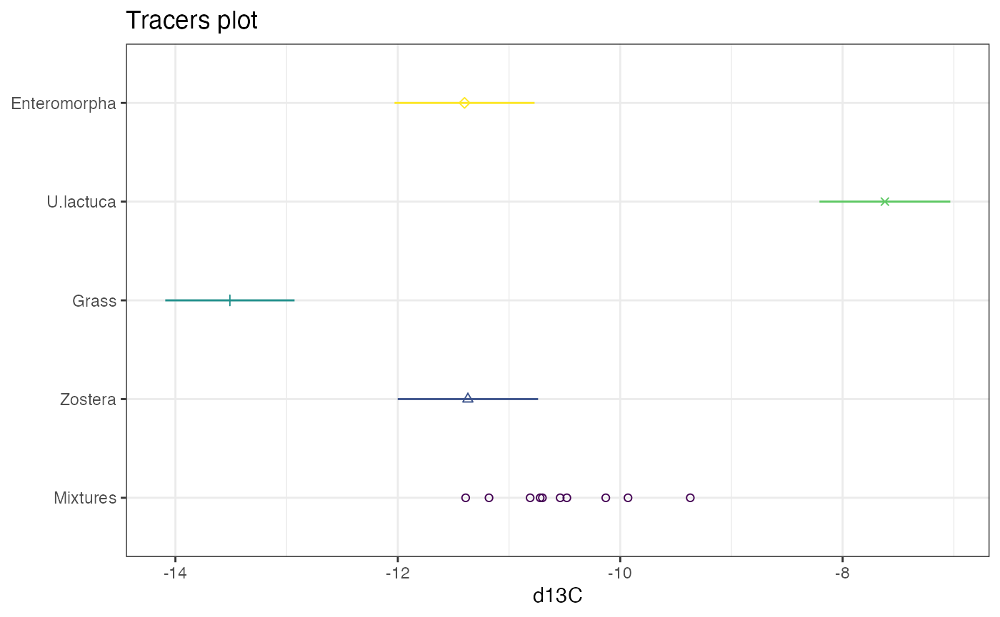
Now run simmr:
simmr_run_1D = simmr_mcmc(simmr_in_1D)## Compiling model graph
## Resolving undeclared variables
## Allocating nodes
## Graph information:
## Observed stochastic nodes: 10
## Unobserved stochastic nodes: 5
## Total graph size: 79
##
## Initializing modelPlot output
plot(simmr_run_1D, type = 'boxplot')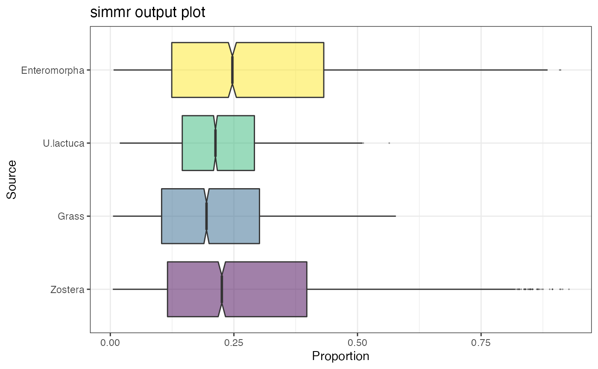
The other summary, compare and plot functions should all work the same.
Most Bayesian models will work better when you include informative prior distributions on the dietary proportions. For arguments as to why you should use prior informative information (and where you could get it from), see here. simmr tries to make this easier for practitioners by including a specific function (`simmr_elicit’) for including prior information.
We will use the simmr_out object created above. A reminder about the posterior values
summary(simmr_out, type = 'quantiles')##
## Summary for 1
## 2.5% 25% 50% 75% 97.5%
## deviance 32.226 33.940 35.688 37.786 44.199
## Zostera 0.028 0.113 0.205 0.319 0.493
## Grass 0.147 0.231 0.281 0.336 0.465
## U.lactuca 0.215 0.254 0.274 0.296 0.344
## Enteromorpha 0.035 0.119 0.201 0.296 0.469
## sd[d13C] 0.183 0.406 0.524 0.677 1.077
## sd[d15N] 0.043 0.275 0.410 0.551 0.952All these dietary proportions are very similar. We now suppose we had prior information (e.g. from stomach or fecal contents) that the mean dietary proportions were
proportion_means = c(0.4,0.3,0.2,0.1)…and proportion standard deviations:
proportion_sds = c(0.08,0.02,0.01,0.02)We put this into the simmr_elicit function as follows:
prior = simmr_elicit(4, proportion_means,
proportion_sds)## Running elicitation optimisation routine...
## Mean optimisation successful.
## Standard deviation optimisation successful.
## Best fit estimates provide proportion means of:
## 0.427 0.304 0.188 0.08
## ... and best fit standard deviations of:
## 0.045 0.025 0.016 0.025
## Check these match the input values before proceeding with a model run.This may take a few moments to run as the code tries to optimise the parameters of a prior distribution which matches these means and standard deviations, which sometimes may not be exactly possible.
When finished, the model can be run using these prior distributions:
simmr_out_informative = simmr_mcmc(simmr_in,
prior_control =
list(means = prior$mean,
sd = prior$sd))## Compiling model graph
## Resolving undeclared variables
## Allocating nodes
## Graph information:
## Observed stochastic nodes: 20
## Unobserved stochastic nodes: 6
## Total graph size: 136
##
## Initializing modelThe new quantiles are:
summary(simmr_out_informative,
type = 'quantiles')##
## Summary for 1
## 2.5% 25% 50% 75% 97.5%
## deviance 39.736 43.354 45.776 48.323 54.544
## Zostera 0.319 0.365 0.392 0.420 0.472
## Grass 0.281 0.309 0.325 0.340 0.369
## U.lactuca 0.179 0.198 0.209 0.219 0.239
## Enteromorpha 0.039 0.058 0.071 0.086 0.122
## sd[d13C] 0.379 0.587 0.722 0.887 1.377
## sd[d15N] 0.221 0.493 0.644 0.815 1.325We can plot these priors with their posteriors
prior_viz(simmr_out_informative)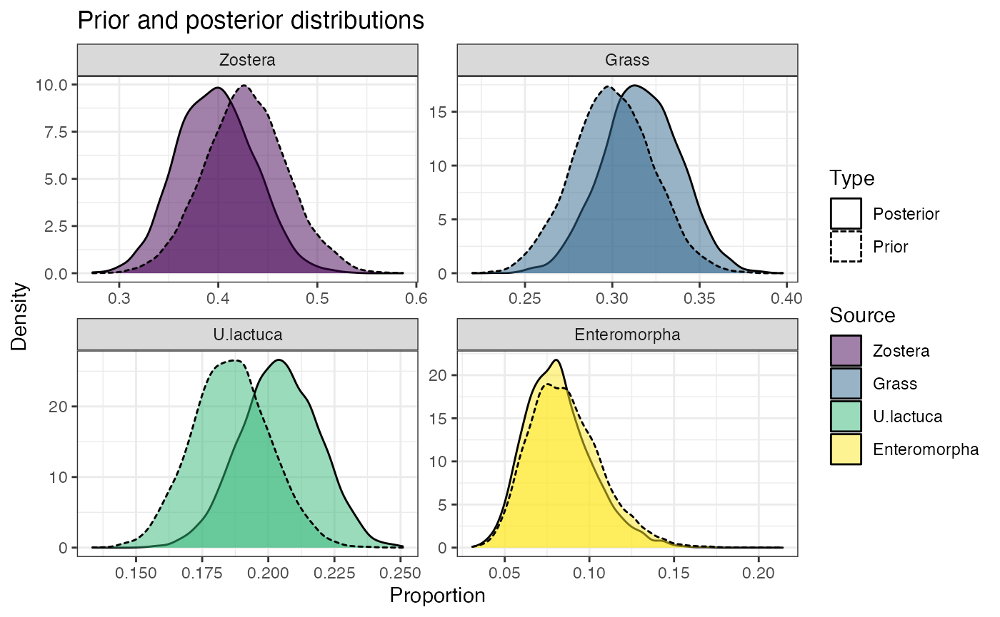
The simmr_mcmc_tdf function runs a slightly different version of the main simmr_mcmc function with the key difference that it estimates the correction factors (i.e. trophic enrichment or trophic discrimination factors; TEFs/TDFs) for a known set of dietary proportions. However, these dietary proportions can change in a single model run; see the example below.
The idea is that this code can be used for feeding studies where an organism is fed a known proportional diet with a view to estimating the correction factors to be used in a later stable isotope mixing model when the organisms are observed in the field.
To run this model, we first load data into simmr as normal using simmr_load. Correction factors/TDFs should not be provided at this stage, though if they are they will be ignored during a run of simmr_mcmc_tdf.
simmr_tdf = simmr_load(mixtures = mix,
source_names = s_names,
source_means = s_means,
source_sds = s_sds,
concentration_means = conc)If we plot this data we end up with the mixtures being shifted slightly outside the mixing polygon. The job of this model is to move the values so that they match the known dietary proportions.
plot(simmr_tdf)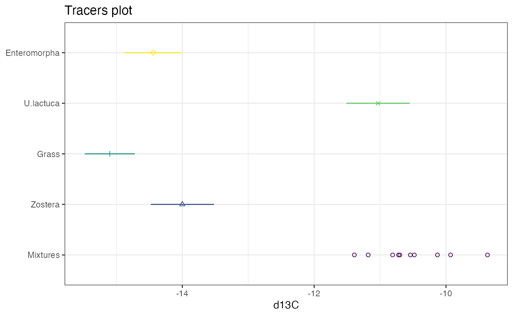
We now run the model with some known dietary proportions. These dietary proportions should be given for each individual in a matrix, even if they are the same for each individual. This example uses the same dietary proportions:
p_known = matrix(rep(1/simmr_tdf$n_sources,
simmr_tdf$n_sources),
ncol = simmr_tdf$n_sources,
nrow = simmr_tdf$n_obs,
byrow = TRUE)We can then run the model with:
simmr_tdf_out = simmr_mcmc_tdf(simmr_tdf,
p = p_known)Seeing as this is another Bayesian statistical model, we can look at the:
summary(simmr_tdf_out,type = 'diagnostics')## Gelman diagnostics - these values should all be close to 1.
## If not, try a longer run of simmr_mcmc_tdf.
## c_mean[1,1] c_mean[2,1] c_mean[3,1] c_mean[4,1] c_sd[1,1] c_sd[2,1]
## 1 1 1 1 1 1
## c_sd[3,1] c_sd[4,1] deviance
## 1 1 1… and then look at the predicted TDFs:
summary(simmr_tdf_out,type = 'quantiles')## 2.5% 25% 50% 75% 97.5%
## c_mean[1,1] 2.095 2.466 2.623 2.765 3.107
## c_mean[2,1] 2.095 2.466 2.623 2.765 3.107
## c_mean[3,1] 2.095 2.466 2.623 2.765 3.107
## c_mean[4,1] 2.095 2.466 2.623 2.765 3.107
## c_sd[1,1] 0.163 0.573 0.829 1.102 1.820
## c_sd[2,1] 0.163 0.573 0.829 1.102 1.820
## c_sd[3,1] 0.163 0.573 0.829 1.102 1.820
## c_sd[4,1] 0.163 0.573 0.829 1.102 1.820
## deviance 16.976 17.808 19.087 21.311 27.848We can put the predicted TDFs back into a new model and check that the iso-space plot now is correct
simmr_tdf_2 = simmr_load(mixtures = mix,
source_names = s_names,
source_means = s_means,
source_sds = s_sds,
correction_means = simmr_tdf_out$c_mean_est,
correction_sds = simmr_tdf_out$c_sd_est,
concentration_means = conc)
plot(simmr_tdf_2)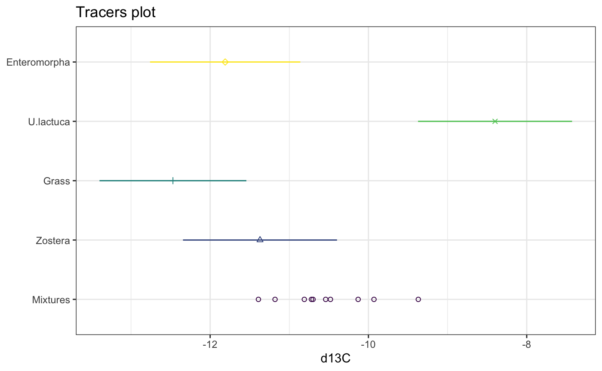
Many of the plots in simmr can be customised by adding on extra options just like a standard ggplot. For example:
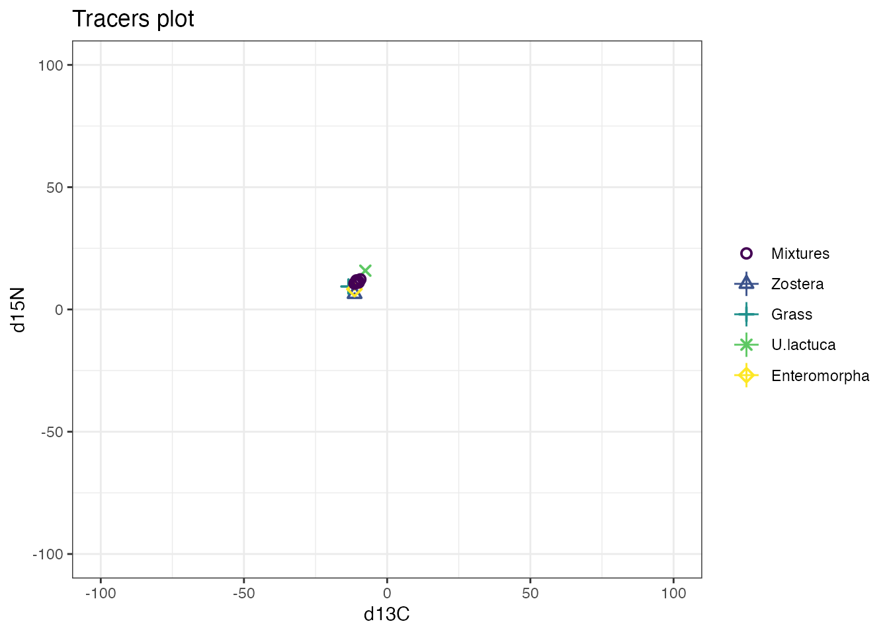
or even on the output:
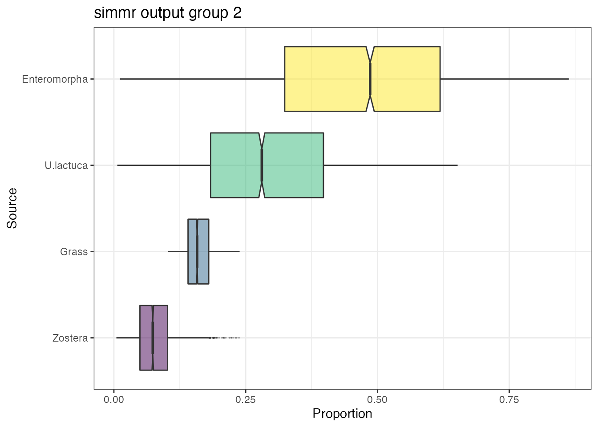
## Warning: Removed 2081 rows containing non-finite values (stat_boxplot).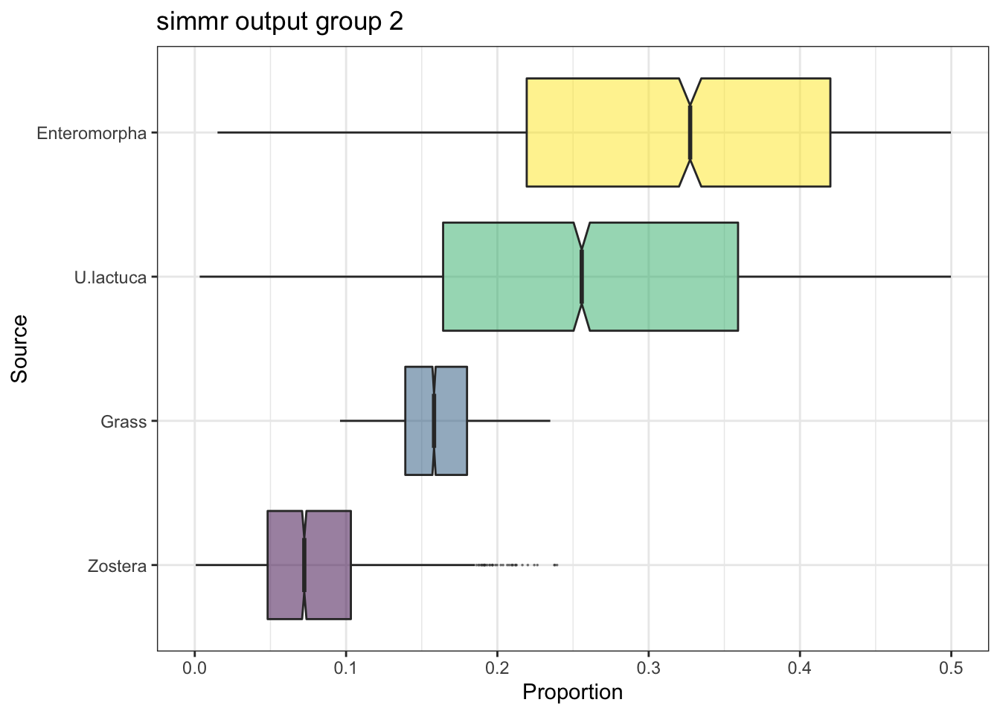
Note that the above actually changes the x-axis and not the x-axis despite the above command. This is because the coordinates are flipped in the ggplot.
Other options you might like to customise include labels on axes, titles/subtitles, etc. More complicated changes can be made but these involve changing the ggplot commands that simmr uses in the background.
Here is an example where I change the colours of the boxplots:
# First extract the dietary proportions
simmr_out2 = simmr_out$output[[1]]$BUGSoutput$sims.list$p
colnames(simmr_out2) = simmr_out$input$source_names
# Now turn into a proper data frame
df = reshape2::melt(simmr_out2)
colnames(df) = c('Num','Source','Proportion')
# Finally create the new variable that you want to colour by
df$new_colour = 'Type 2'
df$new_colour[df$Source == 'Zostera'] = 'Type 1'
# And create the plot
ggplot(df,aes_string(y="Proportion",x="Source",
fill="new_colour",alpha=0,5)) +
geom_boxplot(notch=TRUE,outlier.size=0) +
theme_bw() +
ggtitle('simmr output boxplot with changed colours') +
theme(legend.position='none') +
coord_flip()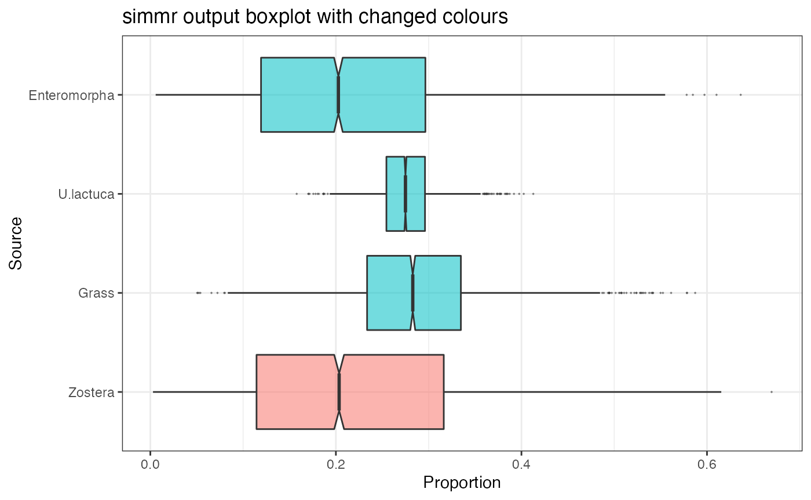
Whilst the above gives an introduction to the basic functions of simmr, the package is open source and all code is open to editing. The two objects created as part of this vignette simmr_in and simmr_out are R lists. They can be explored with e.g.
str(simmr_in)which will show their contents. The simmr_out object in particular allows for full access to all of the posterior dietary proportion samples. We can calculate for example the mean of the Zostera dietary proportion on the first (or only) group:
mean(simmr_out$output$`1`$BUGSoutput$sims.list$p[,'Zostera'])## [1] 0.2227252The backquotes around the 1 are required above because they specify which group (the first). We can thus find the probability that the posterior dietary proportion for Zostera is bigger than for Grass:
mean(simmr_out$output$`1`$BUGSoutput$sims.list$p[,'Zostera']
> simmr_out$output$`1`$BUGSoutput$sims.list$p[,'Grass'])## [1] 0.3438889With more detailed R knowledge, it is possible to create scripts which run multiple data sets in richer fashions than the default simmr functions. See the help file help(simmr_mcmc) for a full list of examples.
For the maths on the original SIAR model:
Andrew C Parnell, Richard Inger, Stuart Bearhop, and Andrew L Jackson. Source partitioning using stable isotopes: coping with too much variation. PLoS ONE, 5(3):5, 2010.
For the geese data:
Inger, R., Ruxton, G. D., Newton, J., Colhoun, K., Robinson, J. A., Jackson, A. L., & Bearhop, S. (2006). Temporal and intrapopulation variation in prey choice of wintering geese determined by stable isotope analysis. Journal of Animal Ecology, 75, 1190–1200.
For the maths behind the more advanced JAGS models:
Andrew C. Parnell, Donald L. Phillips, Stuart Bearhop, Brice X. Semmens, Eric J. Ward, Jonathan W. Moore, Andrew L. Jackson, Jonathan Grey, David J. Kelly, and Richard Inger. Bayesian stable isotope mixing models. Environmetrics, 24(6):387–399, 2013.
For some good advice about mixing models:
Donald L Phillips, Richard Inger, Stuart Bearhop, Andrew L Jackson, Jonathan W Moore, Andrew C Parnell, Brice X Semmens, and Eric J Ward. Best practices for use of stable isotope mixing models in food-web studies. Canadian Journal of Zoology, 92(10):823–835, 2014.